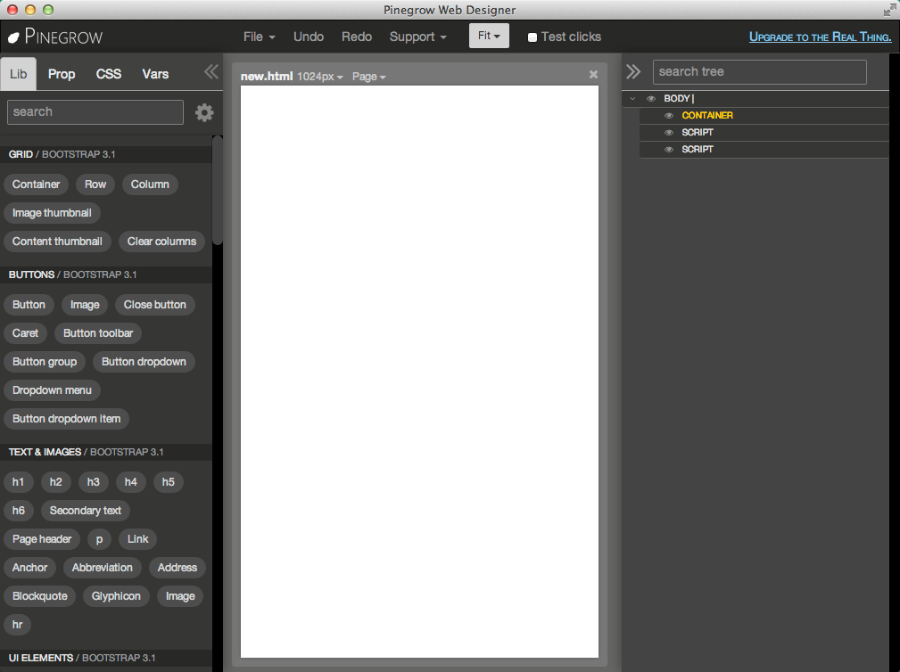

Device Layout¶
This is the first post on this topic, looking at some loayout tools (and their potential limitations).
Let’s say you’ve created one of the examples (e.g. one of the angular.dart tutorials) all the way through the cycles of building and running:
- dart in chromium via the dart editor
- dart2js result in a browser
- on android from the dart GUI
- cordova emulators for iOS and android (through several size devices)
- cordova built apps on target iOS and android devices.
You will have noticed that (for example) the angular.dart tutorial might look fine in a browser, and on a phone, but is too small to use on a tablet.
There’s already enough to learn. Now, we’re going to add angular.dart.ui, a dart implementation of twitter bootstrap which will use dart written components with bootstrap CSS (and grids).
If you haven’t felt overwhelmed yet, you might now. We need some help with basic layout for our devices.
Tools Overview¶
There are two things to note:
- we will avoid using any more than the CSS parts of bootstrap;
- for any javascript introduced, we’ll look for angular.dart.ui equivalents;
- where we can’t readily, remember that calling javascript from dart is ok.
You can search for reviews [1] for bootstrap visual editors. The few that initially impressed me are bootply, pinegrow, and divshot. You can find some starting point layouts for websites at bootstrapzero, free templates which you can view in bootply and interactively code online with bootply.
Working an Example¶
We’ll start with a simple example.
Let’s layout three different colored buttons for a selector. We’ll start with pinegrow‘s desktop visual editor to layout some grids for the buttons, and test them [2].
{kind=link}
Next, by clicking / dragging from the left pallete, add in order:
- a container
- a row
- three columns
Note that you can duplicate an item, such as the column, by clicking it’s double-page icon.
The result should resemble this:
{kind=link}
Delete the column paragraphs by selecting them in the right tree. Once selected, you can either use your delete key, or the trash can icon of the selected item in the middle pane.
For now, let’s keep the column headings, but rename them. You can select the headings in the right tree, and edit using item’s Actions > Edit content menu. You can also simply double-click the text of the heading in the middle pane.
Here’s my resulting layout. I’ve made the buttons large, and searched for a center CSS class in bootstrap - I found .center-block which works for me.
{kind=link}
Notice in the middle panel, the menu at the top. You can change the aspect in the middle pane’s layout by, for example, changing (from the pulldown) to phone / 320px. You can change the zoom of your view from the top Pinegrow menu (near the right).
{kind=link}
The code is relatively straightforward. You can get to it from the Page > Edit code menu.
{kind=link}
Angular Dart UI¶
Comparing it to a version of the button demo of angular.dart.ui, it doesn’t look like we’ll have too much work to combine what we’ve developed in Pinegrow with angular.dart. We have ng-model to add to the buttons, but otherwise the button properties from Pingrow should be useable. I’ll guess that putting the grid divs inside the buttons-ctrl div will be all that remains.
{kind=link}
We have no javascript (the defaults which Pinegrow inserted aren’t needed), and we’re not using any css beyond bootstrap.
bootply Preview¶
To show the output of Pinegrow in bootply, I started with the Basic starter in bootply and then added the container from Pinegrow. Here is the result:
{kind=link}
Next Steps¶
Here is the Pinegrow generated source. Note that line 18 shows a link to the new css file, which, in our case, is empty.
1 2 3 4 5 6 7 8 9 10 11 12 13 14 15 16 17 18 19 20 21 22 23 24 25 26 27 28 29 30 31 32 33 34 35 36 37 38 39 40 41 42 43 44 45 46 47 48 49 50 51 52 | <!DOCTYPE html>
<html lang="en" class="crsa-selected">
<head>
<meta charset="utf-8">
<meta http-equiv="X-UA-Compatible" content="IE=edge">
<meta name="viewport" content="width=device-width, initial-scale=1.0">
<meta name="description" content="">
<meta name="author" content="">
<link rel="shortcut icon" href="../../docs-assets/ico/favicon.png">
<title>Blank Template for Bootstrap</title>
<!-- Bootstrap core CSS -->
<link href="bootstrap/css/bootstrap.css" rel="stylesheet">
<!-- Custom styles for this template -->
<link href="new.css" rel="stylesheet">
<!-- HTML5 shim and Respond.js IE8 support of HTML5 elements and media queries -->
<!--[if lt IE 9]>
<script src="https://oss.maxcdn.com/libs/html5shiv/3.7.0/html5shiv.js"></script>
<script src="https://oss.maxcdn.com/libs/respond.js/1.3.0/respond.min.js"></script>
<![endif]-->
</head>
<body>
<div class="container">
<div class="row">
<div class="col-md-4">
<h3>Red</h3>
<button type="button" class="btn btn-default btn-lg center-block btn-danger">RED</button>
</div>
<div class="col-md-4">
<h3>Green</h3>
<button type="button" class="btn btn-default btn-lg center-block btn-success">GREEN</button>
</div>
<div class="col-md-4">
<h3>Blue</h3>
<button type="button" class="btn btn-default btn-lg center-block btn-info">BLUE</button>
</div>
</div>
</div>
<!-- Bootstrap core JavaScript
================================================== -->
<!-- Placed at the end of the document so the pages load faster -->
<script src="https://code.jquery.com/jquery-1.10.2.min.js"></script>
<script src="bootstrap/js/bootstrap.min.js"></script>
</body>
</html>
|
Pinegrow also leaves behind some artifacts which you’ll want to be aware of:
- a directory of backups, _pgbackup
- a configuration file, pinegrow.json
- a directory of the bootstrap you used, bootstrap
In the next post, I’ll look at using this with angular.dart.ui and testing in various targets, including trying to run on various sized mobile devices.
Let’s see how that goes.
| [1] | One such review is here. |
| [2] | I started with Pinegrow release 1.15, but have moved to the beta release - 1.2b1. |